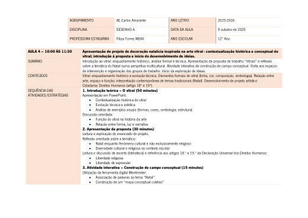
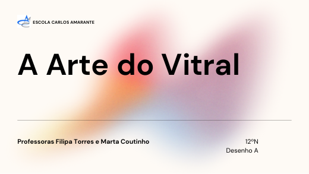
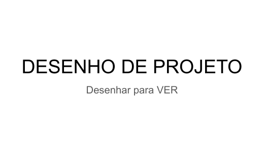

Projeto em coadjuvação
Decoração natalícia inspirada na arte do vitral e na sua reinterpretação com materiais alternativos.
Sobre o projeto
No início do ano letivo fui convidada a dinamizar, em coadjuvação com a professora cooperante Marta Coutinho, um projeto de decoração natalícia para vários espaços da escola, partindo da arte do vitral e da sua reinterpretação com materiais alternativos, em articulação com Oficina de Artes, Cidadania e Desenvolvimento e a biblioteca escolar. Foi a minha primeira experiência de planificação e lecionação no estágio, preparando-me para o PIP.
A abordagem incluiu uma apresentação sobre a história e características formais do vitral, um enunciado centrado no Natal que evitava uma visão meramente decorativa ou religiosa — ancorado na diversidade cultural e nos artigos 18.º e 19.º da Declaração Universal dos Direitos Humanos — e um Mentimeter inicial («O que te vem à cabeça quando pensas no Natal?»).
Retiro como aprendizagem mais marcante a importância de acompanhar e valorizar o processo de trabalho do aluno e de o levar a aceitar o erro como parte da aprendizagem — uma lição que transportei diretamente para o Projeto de Intervenção Pedagógica.
Instrumentos didácticos


